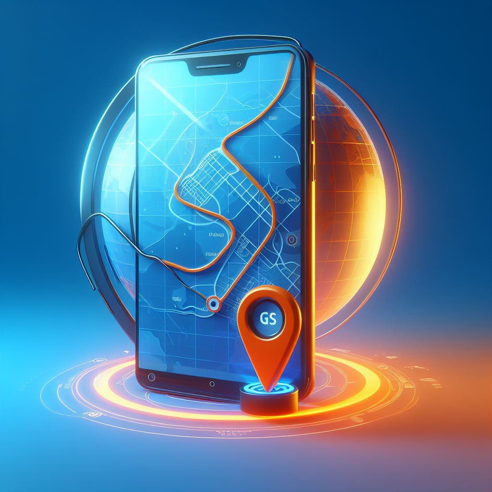

A Edy Global Solutions oferece instalação profissional de sistemas de GPS veicular para rastrear e proteger seus veículos. Tenha controle em tempo real e garanta a segurança de sua frota.
Então, não espere. Obtenha controle total sobre sua frota com nossos sistemas de GPS veicular. Garanta a segurança de sua frota e tenha a paz de espírito que vem com o conhecimento de que seus veículos estão protegidos. Entre em contato conosco na Edy Global Solutions hoje mesmo para saber mais
Na Edy Global Solutions, fornecemos soluções de rastreamento GPS de última geração para empresas e indivíduos. Nossos dispositivos de rastreamento GPS são projetados para oferecer dados de localização precisos e em tempo real, proporcionando controle total sobre seus ativos e garantindo sua segurança.
Nossas soluções de rastreamento GPS são perfeitas para empresas que precisam rastrear veículos de sua frota ou equipamentos valiosos. Com nosso software de rastreamento, você pode visualizar a localização, velocidade e direção de seus ativos a qualquer momento, de qualquer lugar.
Monitore a localização de seus veículos em tempo real, facilitando a gestão da frota.
Em caso de roubo, o sistema de GPS ajuda a rastrear e recuperar seu veículo mais rapidamente.
Planeje rotas eficientes e economize tempo e combustível com informações precisas de trânsito.
Receba relatórios com dados sobre o uso de veículos, ajudando na tomada de decisões de negócios.
O GPS é seu aliado na recuperação rápida de um veículo roubado, fornecendo informações precisas para a ação imediata das autoridades.
Se você possui uma frota de veículos, o GPS lhe ajuda a rastrear a sua rota melhorando a eficiência operacional, reduzindo custos.
Registre a trajetória e histórico de movimentação do seu veículo, fornecendo dados valiosos para análises de desempenho e segurança.
Crie áreas delimitadas no mapa e receba alertas quando seu veículo entra ou sai dessas áreas, garantindo o controle total sobre o uso do seu carro.
O sistema de GPS para motas oferece as seguintes funções:
O sistema de GPS para carros oferece as seguintes funções:

A instalação de GPS veicular é a solução ideal para quem busca segurança e controle sobre seus veículos. Com um GPS instalado, você pode saber sempre onde seu carro, moto ou outro veículo está.

A instalação de alarme veicular é a solução ideal para quem busca proteção contra roubos e furtos. Com um alarme instalado, você pode evitar que seu veículo seja levado.

A montagem de CCTV é a solução ideal para quem busca segurança e monitoramento de propriedades. Com um sistema de CCTV instalado, você pode monitorar o que está acontecendo em sua propriedade em tempo real.

A montagem de redes de TI é a solução ideal para quem busca conectividade e segurança de dados. Com uma rede de TI instalada, você pode conectar seus dispositivos e compartilhar dados de forma segura.
Estamos prontos para atendê-lo. Entre em contacto connosco.
Entrar em Contacto pelo WhatsAppBela Vista,Rua da Cruz Linda
egsolution21@gmail.com
948558954 | 936629314
Domingo Fechado
Segunda-feira 08:30 – 16:30
Terça-feira 08:30 – 16:30
Quarta-feira 08:30 – 16:30
Quinta-feira 08:30 – 16:30
Sexta-feira 08:30 – 16:30
Sábado 08:30 – 12:30